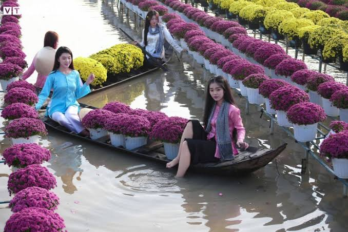

Lịch sử và vẻ đẹp làng hoa

Làng hoa Sa Đéc (khởi nguồn là Làng hoa Tân Quy Đông, TP. Sa Đéc, Đồng Tháp) có lịch sử hơn 100 năm phát triển.
Cuối thế kỷ XIX: Bắt đầu từ vài hộ dân tận dụng đất phù sa sông Tiền trồng hoa trang trí dịp Tết. Đầu thế kỷ XX: Nghề phát triển mạnh nhờ các lão nông tiên phong, đưa thương hiệu hoa Sa Đéc vang danh khắp Nam Kỳ. Thời kỳ Đổi mới (sau 1986): Nghề hoa hồi sinh, diện tích mở rộng ra các xã lân cận với hơn 2.300 hộ dân tham gia. Hiện nay: Trở thành "thủ phủ hoa kiểng" Miền Tây, ứng dụng công nghệ cao, xuất khẩu quốc tế và phát triển du lịch trải nghiệm rực rỡ. Nét đặc trưng: Hình ảnh "trồng hoa trên giàn" — người dân chèo xuồng giữa các con rạch dưới giàn hoa để chăm sóc, tạo nên nét văn hóa sông nước độc nhất vô nhị.
Đây là một làng nghề trồng hoa nổi tiếng của miền Tây Nam Bộ. Nơi đây có nhiều loại hoa và cây cảnh đa dạng. Các vườn hoa rực rỡ sắc màu tạo nên khung cảnh đẹp mắt.
Người dân địa phương đã gắn bó với nghề trồng hoa qua nhiều thế hệ. Đặc biệt vào dịp Tết, làng hoa trở nên nhộn nhịp với hàng nghìn chậu hoa được chăm sóc và chuẩn bị.
Du khách có thể tham quan vườn hoa, chụp ảnh và tìm hiểu cách trồng, chăm sóc các loài hoa.
Xem hình ảnh